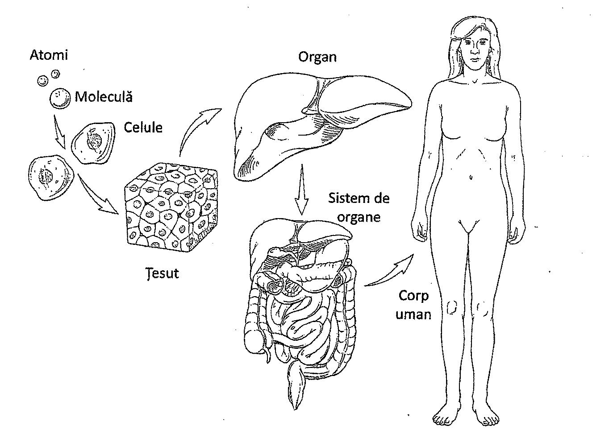
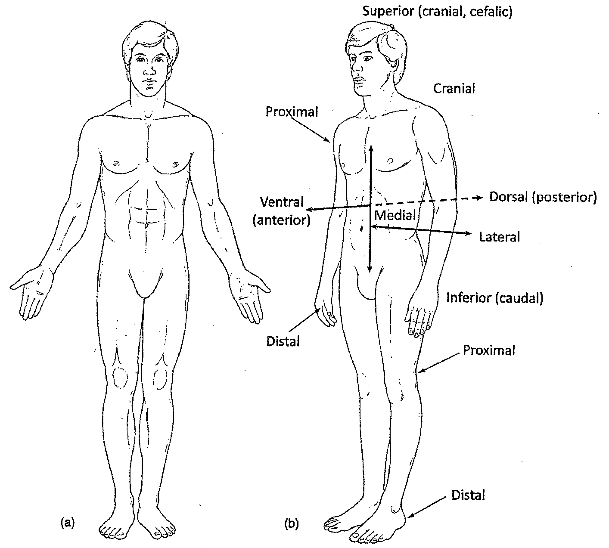
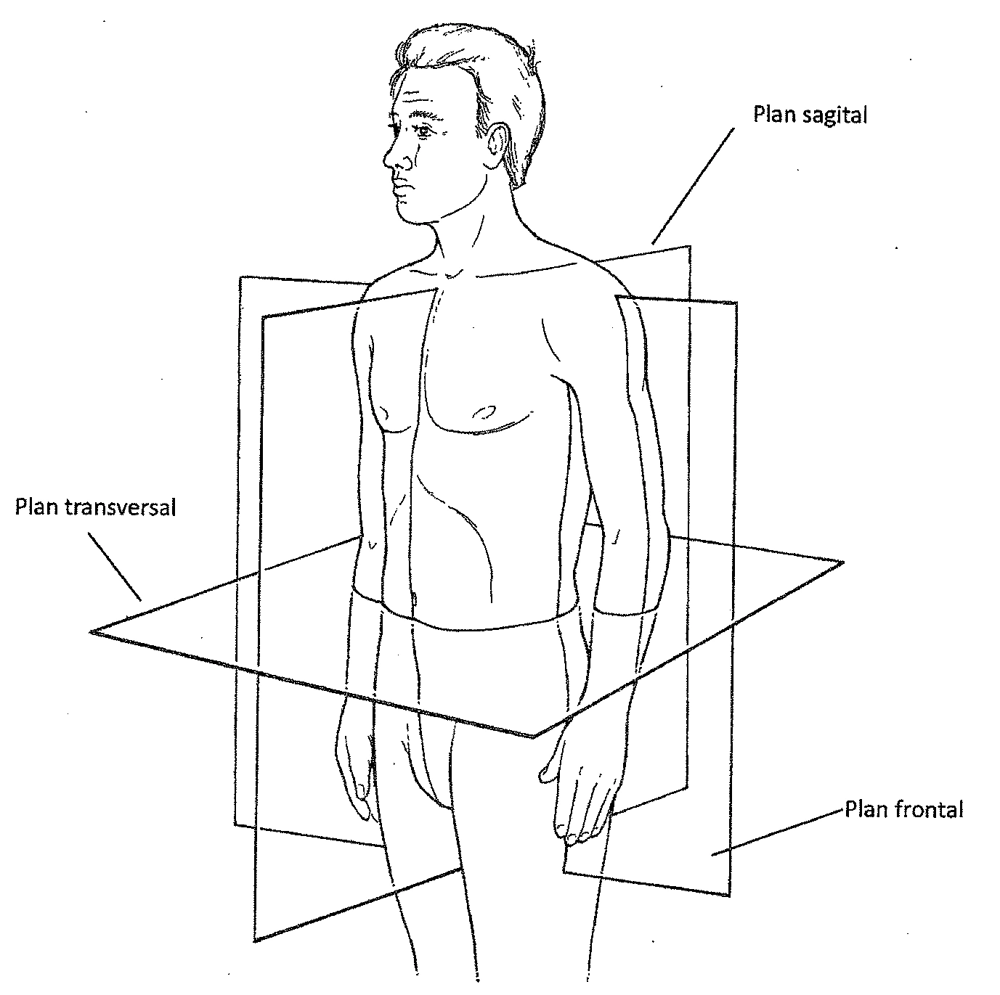
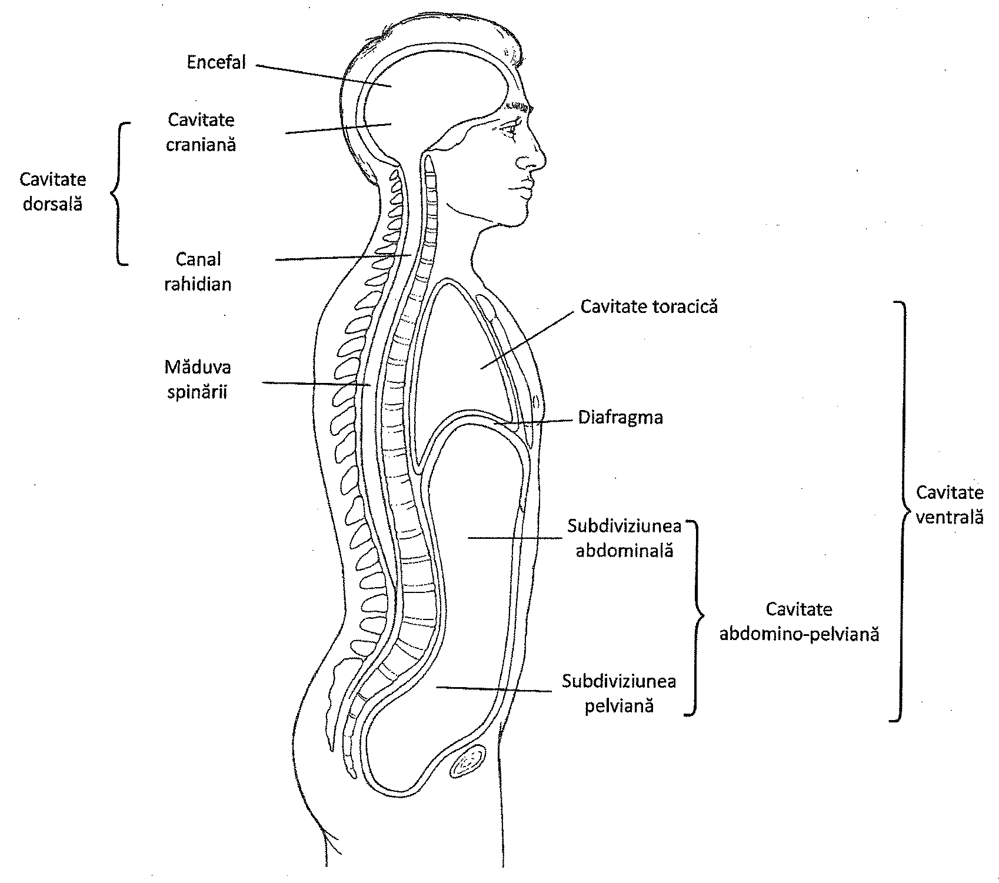
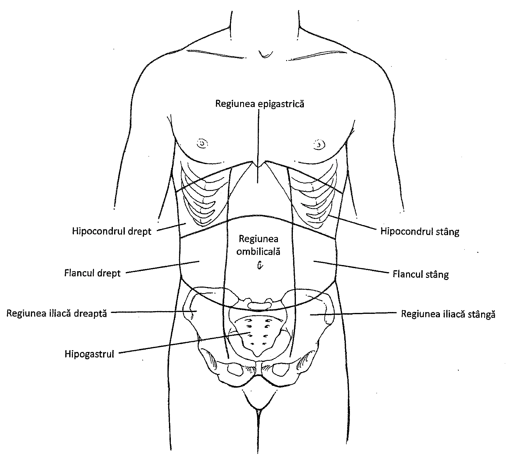

Capitolul 1 – Introducere în anatomie și fiziologie
1.1. Introducere
Cunoașterea anatomiei și fiziologiei omului este esențială pentru a înțelege corpul uman. Anatomia și fiziologia se referă la nivelurile de organizare a corpului uman și la modul în care funcționează acesta. Funcțiile corpului uman depind de structura sa; în același timp, structura organismului oferă indicii despre funcțiile pe care le îndeplinește. Spre exemplu, plămânii sunt alcătuiți din milioane de saci alveolari cu pereții extrem de fini. Această alcătuire permite ca la nivelul plămânilor să se realizeze schimbul gazos dintre oxigen și dioxidul de carbon.
Anatomia are mai multe subdiviziuni. De exemplu, anatomia macroscopică studiază structurile corpului care sunt vizibile fără microscop. Anatomia microscopică (histologia) se ocupă cu studiul celulelor, țesuturilor și organelor vizibile cu ajutorul microscopului. Anatomia dezvoltării se ocupă cu dezvoltarea individului de la stadiul de ou fecundat până la adult.
Și în fiziologie există mai multe subdiviziuni. Citologia reprezintă studiul celulelor și al funcțiilor acestora, neurofiziologia studiază funcția nervoasă, fiziologia renală se ocupă de sistemul excretor și funcțiile acestuia, iar fiziologia reproducerii studiază organele reproducătoare și modalitățile de reproducere.
1.2. Niveluri de organizare structurală
Corpul uman prezintă câteva niveluri de organizare structurală. La cel mai simplu nivel, corpul uman este compus din atomi, particule electronomicroscopice de materie. Atomii sunt unități ale elementelor precum oxigenul, carbonul, azotul sau sodiul. Atomii se combină între ei pentru a forma molecule. Dintre moleculele importante din corpul uman fac parte apa, clorura de sodiu, proteinele, glucidele, lipidele (Figura 1.1).

Asocierea mai multor molecule între ele dă naștere următorului nivel de organizare, celula. Celula este unitatea fundamentală a organismelor vii. Ea conține structuri subcelulare, precum nucleul, mitocondriile, ribozomii și lizozomii (Capitolul 3). Exemple de celule din organismul uman sunt: celulele nervoase, musculare, sanguine, fiecare cu structură și funcție unică.
Următorul nivel de organizare este țesutul. Acesta reprezintă un grup de celule cu structură similară, care funcționează împreună și îndeplinesc aceeași funcție (Capitolul 4). Organismul are patru tipuri principale de țesuturi: țesutul epitelial (precum epidermul din piele), țesutul conjunctiv (precum sângele și țesutul osos), țesutul muscular și țesutul nervos. Fiecare tip de țesut are rolurile lui în organism.
Nivelul imediat superior de organizare este organul. Un organ este compus din două sau mai multe tipuri diferite de țesuturi. Spre exemplu, stomacul este un organ compus din țesut epitelial, muscular, nervos și conjunctiv. Un organ funcționează ca un centru anatomic și fiziologic specializat pentru o anumită activitate.
Nivelul final de organizare structurală este sistemul de organe, compus din mai multe organe cu funcții complementare. Exemple de astfel de sisteme includ sistemul digestiv, respirator, nervos și circulator (Tabelul 1.1). Sistemele funcționează împreună formând organismul, cel mai înalt nivel de organizare.
| Sistem de organe | Rol fiziologic | Componente majore |
|---|---|---|
| Tegument | Acoperă și protejează corpul | Piele, păr, unghii și glande sudoripare |
| Schelet | Protejează corpul și oferă suport pentru locomoție și mișcare | Oase, cartilaje și ligamente |
| Nervos | Primește stimuli, integrează informații și coordonează funcțiile organismului | Encefal, măduva spinării, nervi și organe de simț |
| Endocrin | Coordonează și integrează chimic activitățile organismului | Hipofiză, glande suprarenale, tiroidă și alte glande |
| Muscular | Realizează mișcarea corpului | Mușchi striați, mușchi netezi și mușchiul cardiac |
| Digestiv | Digestia alimentelor și absorbția nutrienților solubili din hrana ingerată | Dinți, glande salivare, esofag, stomac, intestine, ficat și pancreas |
| Respirator | Colectează oxigenul și elimină dioxidul de carbon | Plămâni, faringe, trahee și alte căi aeriene |
| Circulator | Transportă celule și substanțe în organism | Inimă, vase sanguine, sânge, structuri limfatice |
| Imunitar | Interacționează cu agenți străini | Limfocite T, limfocite B și macrofage; structuri limfatice |
| Urinar | Îndepărtează deșeuri metabolice din sânge | Rinichi, vezică urinară și căile urinare asociate |
| Reproducător | Produce celule sexuale necesare procreerii | Testicule, ovare și structurile asociate aparatului reproducător |
1.3. Funcții ale organismului
Organismul uman, ca și celelalte viețuitoare, are câteva funcții care îl diferențiază de tot ce e lipsit de viață. Acestea le permit celulelor din organism să își desfășoare activitățile necesare creșterii și supraviețuirii.
Metabolismul
O funcție importantă a viețuitoarelor este metabolismul, care reprezintă suma tuturor proceselor chimice care se desfășoară în organism. Metabolismul se împarte în cele două subcategorii, catabolismul și anabolismul. Catabolismul reprezintă descompunerea materiei organice, de obicei cu producere de energie. Anabolismul reprezintă sinteza de materie organică și necesită de obicei energie. Procese vitale precum digestia, respirația, circulația și excreția sunt adaptate să furnizeze materia primă metabolismului și să îndepărteze produșii de degradare ai acestuia.
Mișcarea și alte funcții
O funcție importantă este mișcarea, ea fiind rezultatul contracției celulelor musculare. Mișcarea poate fi voluntară, precum cea care apare la nivelul mușchilor scheletici, sau involuntară, în cazul mușchiului cardiac. Oasele și cartilajele sistemului scheletic participă la realizarea mișcării, oferind locuri de atașare pentru mușchi.
O altă funcție, creșterea, se referă la creșterea în dimensiuni a corpului. Creșterea este procesul prin care un organism primește substanțe din mediul înconjurător și își mărește masa.
Conductibilitatea se referă la proprietatea unor celule de a transmite stimuli dintr-o parte în alta a corpului. Această caracteristică aparține celulelor nervoase și musculare.
O altă funcție importantă a organismelor vii este reproducerea, capacitatea organismului de a procrea. Reproducerea se referă la formarea de noi celule, pentru creștere, reparare sau înlocuire, sau producerea în totalitate a unui nou individ. Reproducerea umană implică producerea de spermatozoizi și ovule și contopirea acestora pentru a forma un ovul fecundat, din care se dezvoltă apoi un nou individ. Această formă de reproducere este cunoscută sub numele de reproducere sexuată. Ea se deosebește de reproducerea asexuată, ce constă în diviziunea unei singure celule. Reproducerea asexuată are ca rezultat formarea a două celule fiice identice; reproducerea asexuată o întâlnim în procesele de creștere și reparație.
Alte caracteristici ale viețuitoarelor includ excitabilitatea, răspunsul organismului la un stimul intern sau extern, și excreția, procesul de îndepărtare a produșilor de degradare ai organismului.
Homeostazia
Homeostazia reprezintă totalitatea proceselor care contribuie la menținerea parametrilor mediului intern al organismului în limitele normale, chiar dacă mediul înconjurător se modifică. Ea implică menținerea relativ constantă a parametrilor mediului chimic și fizic în celule și în organism. Apa, substanțele nutritive și oxigenul sunt compuși chimici necesari menținerii homeostaziei; menținerea constantă a temperaturii și a presiunii atmosferice sunt cerințe fizice necesare menținerii homeostaziei.
Organismul se află în homeostazie când nevoile celulelor sale sunt satisfăcute și funcțiile se desfășoară normal. Toate sistemele de organe sunt implicate în menținerea homeostaziei, iar compoziția fluidelor din organism este menținută constantă tot timpul. Condițiile stresante precum bolile, căldura, durerea, lipsa de oxigen, determină un dezechilibru al mediului intern și afectează homeostazia.
Deoarece condițiile interne variază în mod constant, organismul este protejat împotriva extremelor prin sisteme de autoreglare, cunoscute ca mecanisme de feed-back. Prin mecanismele de feed-back, organismul trimite informații înapoi la sistem pentru a induce un răspuns. Valoarea de referință a unui mecanism de feed-back o reprezintă valoarea normală a unui factor variabil, precum temperatura. Un senzor, sau receptor, detectează orice deviere de la valoarea de referință, iar un centru de control primește informații de la diverși receptori pe care le integrează și stabilește răspunsul necesar pentru a reveni la valoarea de referință. Ulterior, efectorii produc răspunsul care readuce organismul la homeostazie.
Feed-back-ul negativ este mijlocul principal prin care organismul își păstrează homeostazia. Un mecanism de feed-back negativ apare atunci când informația primită scade producția sistemului astfel încât să aducă sistemul la valoarea lui de referință. Spre exemplu, nivelul glicemiei crește în organism după o masă, iar glucoza stimulează eliberarea insulinei din pancreas. Insulina favorizează intrarea glucozei în celule și, deci, scade nivelul glicemiei. Nivelul scăzut al glucozei determină celulele secretoare de insulină să scadă eliberarea de insulină și să mențină homeostazia.
Mecanismele de feed-back pozitiv pot funcționa ca parte a unui mecanism general de reglare astfel încât să producă un răspuns final specific (ex. coagularea sângelui sau nașterea). Feed-back-ul pozitiv determină devierea din ce în ce mai mare de la valoarea de referință până când se obține răspunsul dorit: oprirea hemoragiei sau expulzia fetală și a placentei.
1.4. Termeni direcționali
Termenii direcționali sunt folosiți în anatomie și fiziologie pentru a arăta poziția părților corpului. Punctul de referință pentru toți termenii direcționali este poziția anatomică. În această poziție corpul este în ortostatism (poziție verticală), cu privirea înainte, picioarele apropiate, membrele superioare pe lângă corp, palmele înainte, cu policele orientat spre exterior (Figura 1.2).
Poziția anatomică a corpului este baza întregii terminologii direcționale: în poziție verticală, cu membrele superioare pe lângă corp și palmele înainte.
În poziție anatomică, fața anterioară a corpului este cea orientată spre partea din față a acestuia. Termenul „anterior" este adeseori înlocuit cu termenul ventral (chiar dacă „ventral" se referă la partea abdominală a patrupedelor, de exemplu câinele). Fața posterioară se referă la partea din spate a corpului. Acest termen poate fi înlocuit cu termenul dorsal.
În corpul uman, termenul superior se referă la direcția orientată spre partea de sus a corpului sau înspre cap. De exemplu, nasul este situat superior față de gură. În loc de „superior" sunt folosiți câteodată termenii cefalic și cranial. Partea inferioară a corpului se referă la direcția orientată spre partea opusă capului, sau spre partea de jos a corpului. Termenul caudal este o expresie alternativă, însă nu este des folosit în anatomia omului, deoarece omul nu are coadă. De exemplu, abdomenul este situat inferior față de torace.
Termenul medial se referă la o direcție apropiată de linia mediană a corpului sau a uneia dintre structurile sale - nasul este situat medial față de ochi. Termenul lateral se referă la poziția îndepărtată de linia mediană - ochii sunt situați lateral față de nas. Termenii ipsilateral și controlateral se referă la structuri aflate de aceeași parte a corpului (ipsilateral) sau de partea opusă a corpului (controlateral) (Tabel 1.2). De exemplu, colonul ascendent și vezica biliară sunt ipsilaterale, iar colonul ascendent și colonul descendent sunt situate controlateral.

Termenul proximal se referă la un punct orientat spre locul de atașare al unei extremități de trunchi; de exemplu, femurul este situat proximal față de trunchi comparativ cu glezna. Prin comparație, distal se referă la un punct situat la distanță față de locul de atașare al unui membru de trunchi; de exemplu, glezna este situată distal față de femur. Termenii superficial și profund se referă la o poziție situată mai aproape de suprafața corpului sau mai îndepărtată de aceasta; pielea este superficială față de mușchi, inima este situată profund comparativ cu mușchii.
| Termen | Definiție | Exemplu |
|---|---|---|
| Anterior (ventral) | În partea din față a corpului sau mai aproape de aceasta | Sternul este situat anterior față de inimă |
| Posterior (dorsal) | În partea din spate a corpului sau mai aproape de aceasta | Esofagul este situat posterior față de trahee |
| Superior (cefalic sau cranial) | Spre cap sau spre partea de sus a unei structuri | Inima este situată superior față de ficat |
| Inferior (caudal) | În partea opusă capului sau în partea de jos a unei structuri | Stomacul este situat inferior față de plămâni |
| Medial | Mai aproape de linia mediană a corpului sau a unei structuri | Ulna se află în partea medială a antebrațului |
| Lateral | La distanță de linia mediană a corpului sau a unei structuri | Plămânii sunt situați lateral față de inimă |
| Ipsilateral | De aceeași parte a corpului | Vezica biliară și colonul ascendent sunt ipsilaterale |
| Controlateral | De partea opusă a corpului | Colonul ascendent și colonul descendent sunt controlaterale |
| Proximal | Mai aproape de locul de atașare al unei extremități de trunchi sau de o structură | Femurul este localizat proximal față de tibie |
| Distal | Mai departe de locul de atașare al unei extremități de trunchi sau de o structură | Falangele sunt situate distal față de carpiene (oasele încheieturii mâinii) |
| Superficial | Spre suprafața corpului | Mușchii peretelui toracic sunt superficiali față de organele din cavitatea toracică |
| Profund | La distanță de suprafața corpului | Coastele sunt situate în profunzime față de pielea toracelui |
Planuri
În corpul uman se pot imagina numeroase suprafețe drepte, numite planuri. Planurile traversează corpul uman și oferă puncte de reper pentru organele acestuia. Un plan sagital, de exemplu, este un plan vertical ce împarte corpul într-o parte dreaptă și una stângă. Un astfel de plan poate fi mediosagital dacă divide corpul în două jumătăți egale, stângă și dreaptă, sau parasagital, dacă divide corpul în două jumătăți inegale (stângă și dreaptă).
Al doilea plan important este cel frontal sau coronal. Ca și planul sagital, acesta are o direcție verticală, însă divide corpul într-o parte anterioară și una posterioară. Planul frontal formează un unghi drept cu planul sagital (Figura 1.3).
Al treilea plan important este cel transversal sau orizontal. Acest plan împarte corpul într-o parte superioară și una inferioară. Pentru a fi studiate, organele se pot secționa în plan transversal; aceste secțiuni sunt denumite secțiuni transversale.

1.5. Cavitățile și regiunile corpului
Cavitățile corpului sunt spații ce conțin organele interne. Cele două cavități principale sunt cavitatea posterioară și cavitatea anterioară. Cea posterioară se află de-a lungul suprafeței posterioare (dorsale) a corpului și cuprinde cavitatea craniană, ce adăpostește encefalul și canalul rahidian, ce adăpostește măduva spinării. Canalul rahidian este delimitat de vertebre.
Cea de a doua este cavitatea ventrală, situată pe fața anterioară (ventrală) a corpului. Aceasta prezintă două subdiviziuni importante, cavitatea toracică și cavitatea abdomino-pelviană (Figura 1.4). Cavitatea toracică este delimitată de coaste și mușchii intercostali și se subîmparte într-o cavitate pleurală stângă și una dreaptă, în fiecare găsindu-se câte un plămân. Suplimentar, în cavitatea toracică există o a treia cavitate, numită cavitatea pericardică, situată medial față de cavitățile pleurale. Cavitatea pericardică adăpostește inima, și este localizată într-o regiune numită mediastin.
Mediastinul conține toate componentele cavității toracice, cu excepția plămânilor. În mediastin se găsesc inima, timusul, esofagul, traheea, bronhiile, precum și vase sanguine și limfatice. Cavitatea pericardică este un spațiu îngust, situat între foița viscerală și cea parietală a pericardului, acestea fiind membranele care învelesc inima (Capitolul 15).

Cavitatea abdomino-pelviană este separată de cavitatea toracică printr-un mușchi de mari dimensiuni, cu formă de cupolă, mușchiul diafragmă. Cavitatea abdomino-pelviană este mai des întâlnită sub denumirea de cavitate peritoneală, și conține organele interne abdominale și pelviene. În partea superioară a acesteia, la nivelul subdiviziunii abdominale, se află stomacul, intestinele, splina, ficatul și alte organe. Partea inferioară, subdiviziunea pelviană, conține vezica urinară, anumite organe reproducătoare și rectul.
Diviziunile suplimentare ale cavității abdomino-pelviene determină nouă regiuni diferite. Regiunea ombilicală se află în centrul abdomenului, iar regiunea epigastrică se localizează superior acesteia. Regiunea hipogastrică se află imediat inferior față de regiunea ombilicală.
Lateral de regiunea epigastrică se află hipocondrul stâng și drept, iar lateral de regiunea ombilicală găsim cele două flancuri, stâng și drept. Lateral de regiunea hipogastrică se află regiunile inghinale (iliace) stângă și dreaptă. Intersecția a două linii imaginare, una orizontală și alta verticală, în centrul cavității abdomino-pelviene are ca rezultat delimitarea altor patru regiuni. Acestea sunt: cadranul superior drept și stâng și cadranul inferior drept și stâng, denumiri utilizate curent în practica clinică (Figura 1.5).
Membranele
Pereții cavității abdominale și organele abdominale sunt căptușite de o membrană fină, alcătuită din două foițe, numită membrană seroasă. Această membrană este denumită astfel deoarece între foițe conține o cantitate mică de lichid lubrifiant numit lichid seros, care este secretat de aceste foițe. Acest lichid permite organelor să alunece cu ușurință pe pereții cavităților corpului, precum și între ele, fără frecare. Foițele membranelor seroase sunt așezate foarte aproape una de cealaltă.
Foița viscerală a membranelor seroase învelește organele (viscerele), iar foița parietală căptușește cavitățile corpului.

În corpul uman există trei tipuri de membrane seroase: pleura, care căptușește cavitatea pleurală, pericardul, care învelește inima și peritoneul, care învelește unele organe abdominale și pelviene (organe peritoneale), iar pe altele le acoperă doar pe fața anterioară (organe retroperitoneale).
Fiecare dintre cele trei tipuri de membrane seroase are o foiță parietală și una viscerală. Foița parietală căptușește o cavitate, iar cea viscerală învelește un organ. De exemplu, foița parietală a peritoneului căptușește cavitatea abdominală și pelviană, iar foița viscerală acoperă diverse organe din această cavitate. Spațiul dintre foițele peritoneale se numește cavitate peritoneală. Cavitatea pleurală este spațiul dintre foițele pleurale, iar cavitatea pericardică este localizată între foița parietală și viscerală a pericardului.
Alte mici cavități ale organismului se găsesc la nivelul capului. Printre acestea, cavitatea orală, cavitatea nazală, urechea medie, orbita, despre care vom discuta în capitolele următoare.